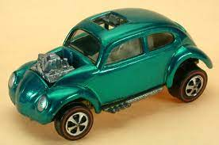
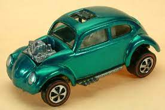

|
Hot Wheels top 4 |
|
|
TOP 5: The Red Baron (1970).
The Red Baron, una creación de hot rod T-bucket inspirada en el as de vuelo de la Primera Guerra Mundial del mismo nombre, se ofreció inicialmente en 1970. Además del casco alemán que sirve como techo, el automóvil estaba equipado con ametralladoras gemelas montadas en la capucha del diseño, que apareció por primera vez como un modelo de monograma de plástico más vendido. El prototipo Red Barron, del cual se sabe que existen menos de 10, tiene un interior de plástico blanco, una base de metal en blanco, sin calcomanía con una cruz de hierro en el casco y guardabarros traseros más cortos que el automóvil lanzado al público. Valor: $ 3,000 sueltos
|
||


 
